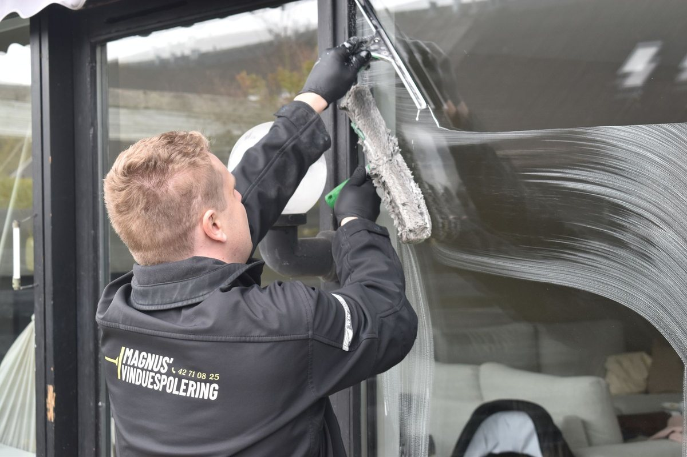

Unser Einsatzgebiet in der Region Hannover
Von unserem Sitz in Wunstorf fahren wir in die gesamte Region Hannover und ins angrenzende Schaumburger Land. Innerhalb des Gebiets berechnen wir keine Anfahrt.
Hier sind wir unterwegs
Der blaue Kreis zeigt unser Kerngebiet rund um Wunstorf. Klicken Sie auf einen Ort, um direkt zur passenden Seite zu kommen.
Warum die Entfernung eine Rolle spielt
Fensterreinigung ist ein Geschäft mit schmalen Margen und viel Fahrzeit. Betriebe, die zu weit fahren, holen sich die Anfahrt über den Preis zurück – oder über kürzere Arbeitszeit vor Ort.
Wir halten unser Einsatzgebiet deshalb bewusst überschaubar: rund um Wunstorf, in Hannover und in den Städten und Gemeinden der Region. So bleiben unsere Wege kurz, wir können kurzfristig reagieren, und Sie zahlen keine Anfahrtspauschale.
Ihr Ort steht nicht in der Liste? Rufen Sie trotzdem an. Wenn wir ohnehin in der Nähe sind oder mehrere Aufträge zusammenkommen, machen wir es meistens möglich.

Fensterreinigung in diesen Städten
Auch hier sind wir unterwegs
Kostenloses Festpreis-Angebot anfragen
Sagen Sie uns kurz, worum es geht – wir melden uns in der Regel innerhalb von 24 Stunden mit einem verbindlichen Preis. Ein Foto Ihrer Fenster per WhatsApp reicht uns meistens schon.
05031 5165899- Angebot 100 % kostenlos & unverbindlich
- Festpreis vorab – keine Überraschungen
- Mit Pflegegrad häufig ohne Eigenanteil
- Bahnhofstraße 85, 31515 Wunstorf